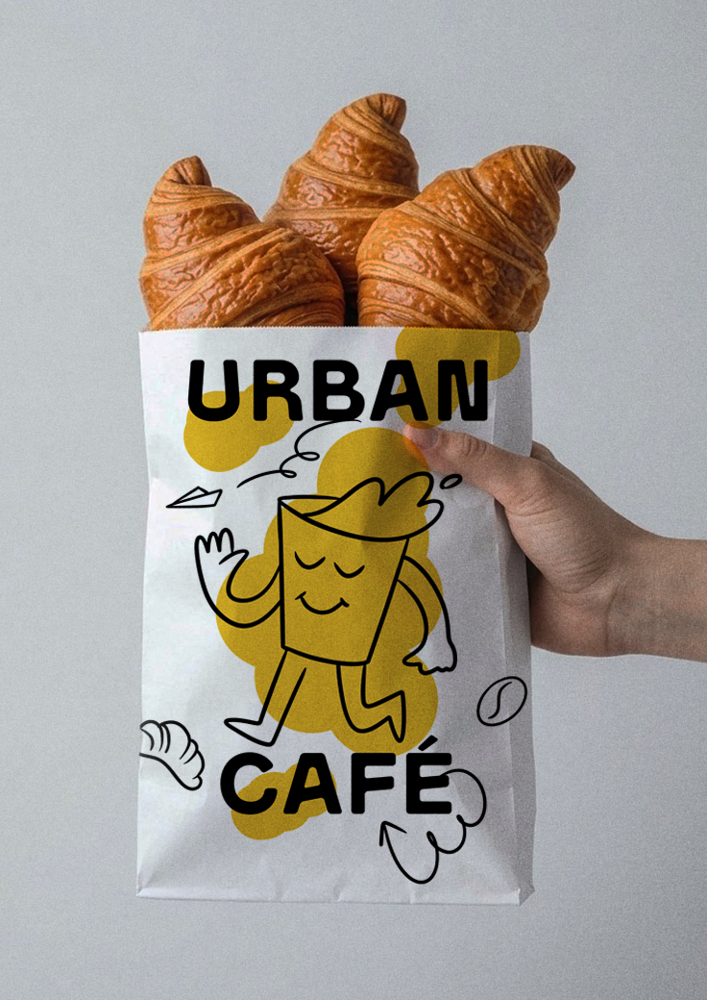
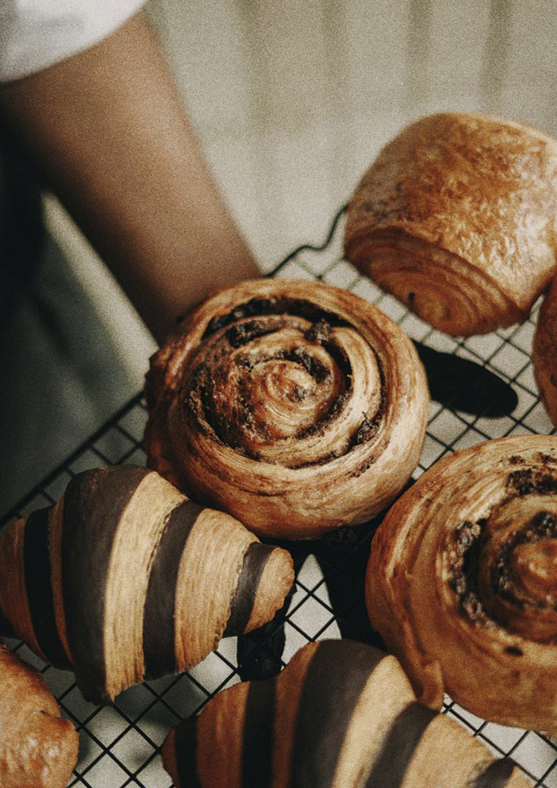
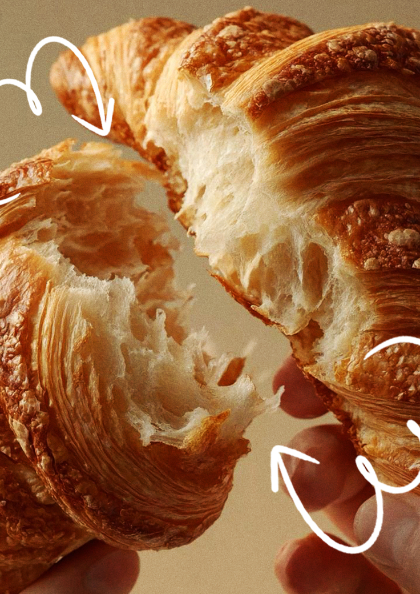
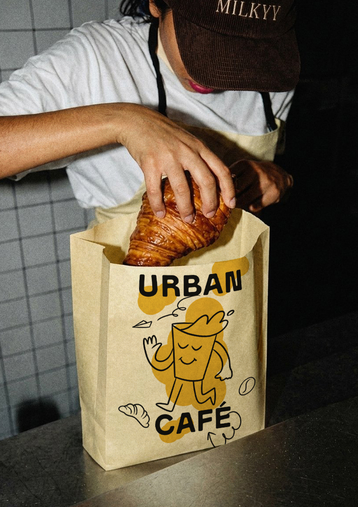
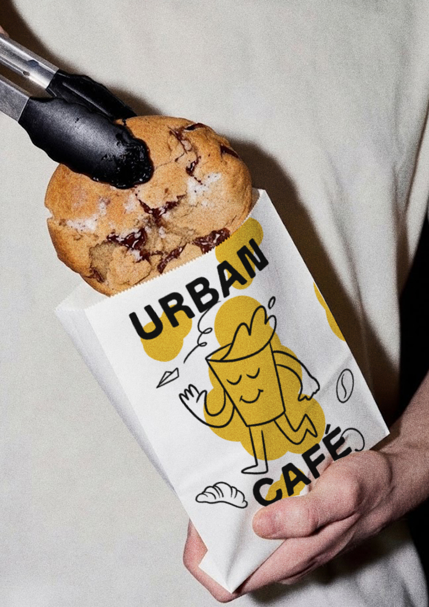
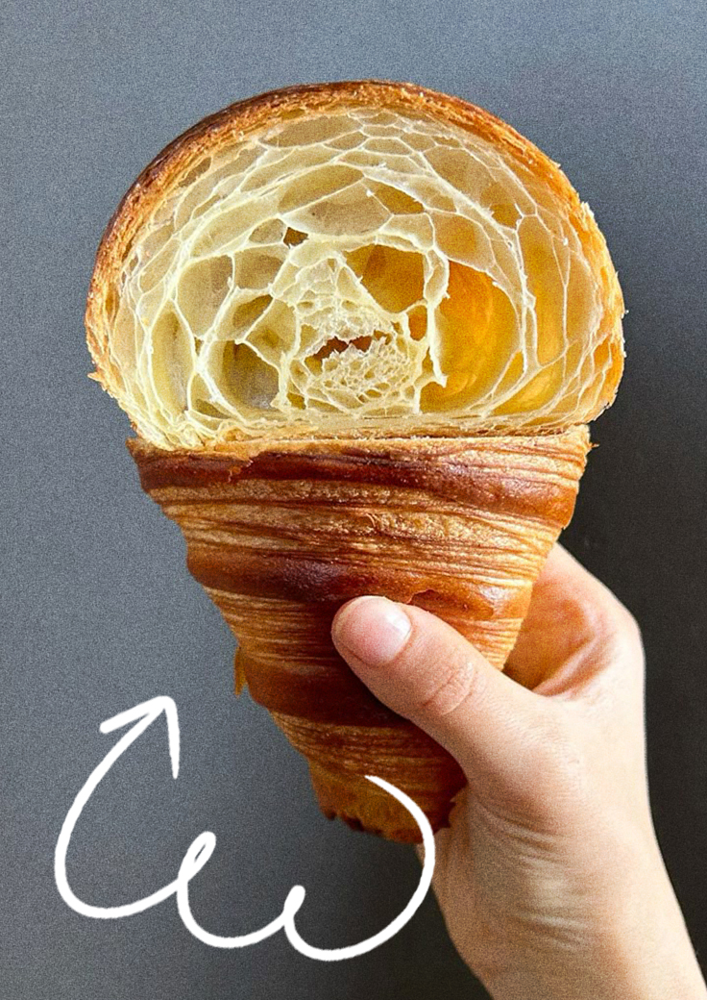
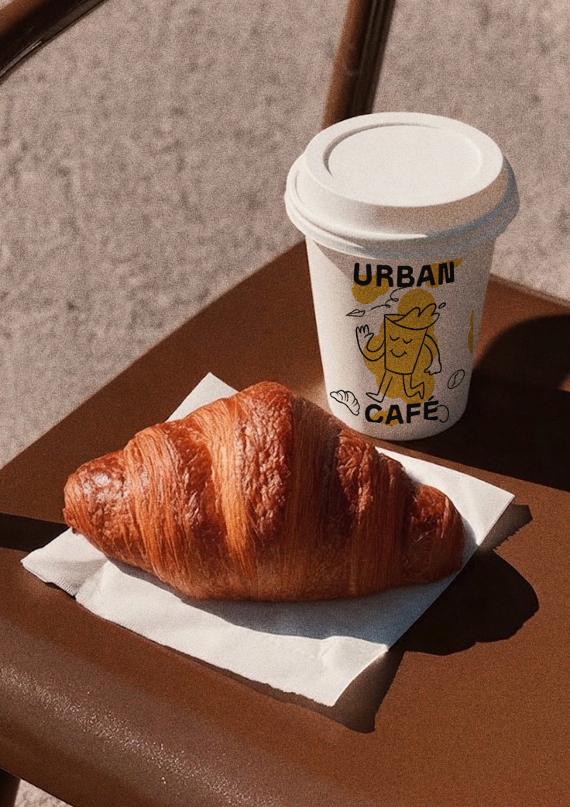
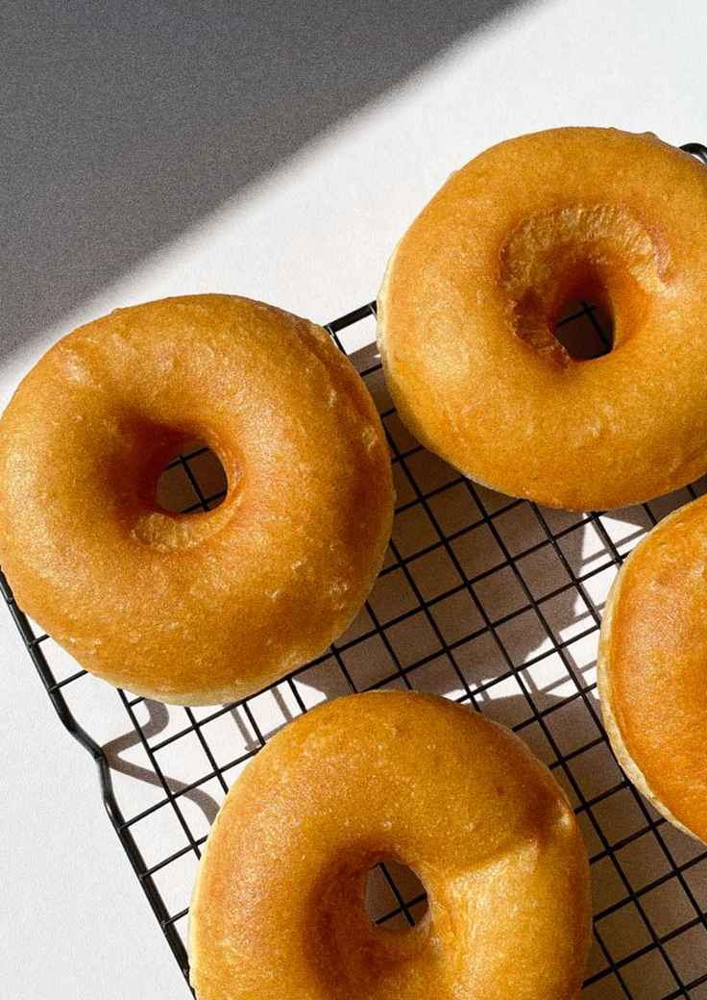
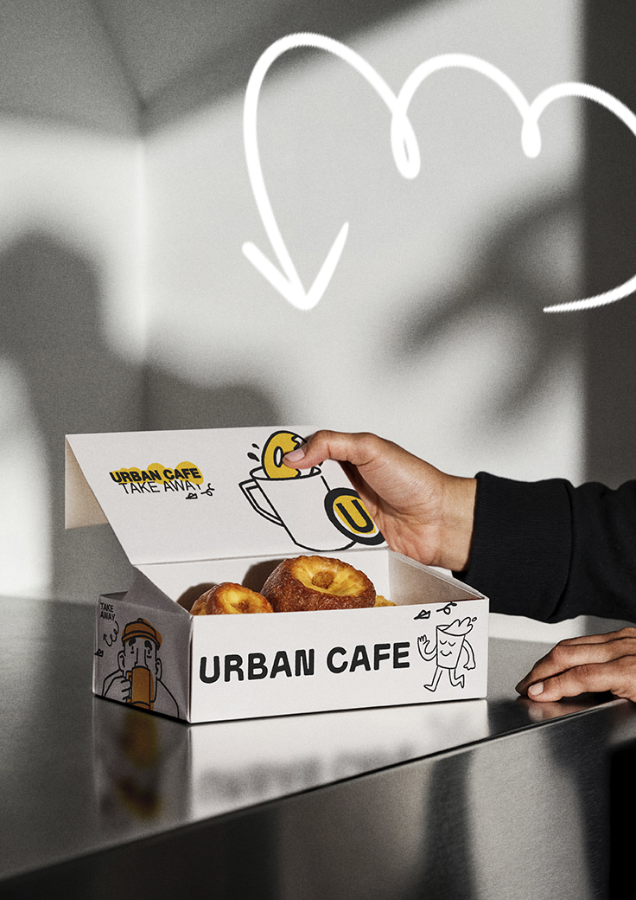

Panadería
Panadería de autor con laminados y elaboraciones artesanales hechas en el lugar cada día.
Laminados y hojaldres
Croissants (simples o rellenos de pistacho, dulce de leche o almendras).
Rolls especiales
Los cup rolls, cream rolls (masa de croissant con rellenos cremosos), o rolls bañados con Nutella, pistacho, Oreo o frutos rojos.
Donas
Diferentes sabores para disfrutar en cada visita.
Pain au chocolat
Clásico hojaldre francés relleno de delicioso chocolate.
Galleta de chocolate
Ricas, crocantes por fuera y suaves por dentro con trozos de chocolate.
Medialunas
Medialuna salada y dulce de manteca tradicional.